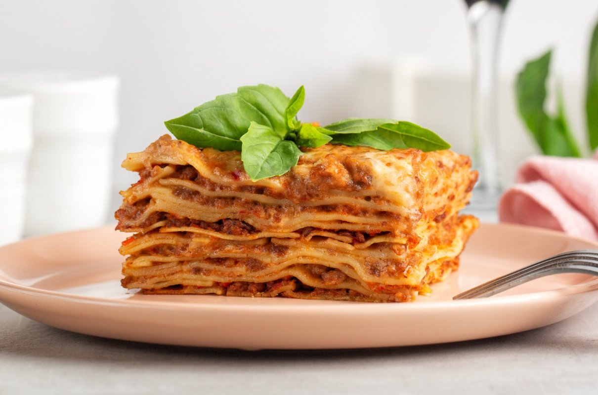

Lasagne

Description
Lasagne, lazania – rodzaj makaronu w postaci dużych, prostokątnych płatów,
a także danie przygotowywane na bazie tego makaronu. Makaron jest uprzednio
gotowany lub układany na sucho w prostokątnym naczyniu, na przemian z warstwami farszu.
Następnie potrawa jest zapiekana.
Ingredients
- Makaron lasagne
- 1 cebula
- 150g boczku wędzonego
- 500g mięsa mielonego wołowego
- 1 szklanka czerwonego wina
- 4 łyżki koncentratu pomidorowego
- 1 szklanka bulionu
- 400g passaty pomidorowej
- sos beszamelowy
Preparing
- Na oliwie, w dużym garnku, zeszklić drobno posiekaną cebulę,
dodać posiekany w drobną kosteczkę seler naciowy oraz startą marchewkę
(warzywa można też rozdrobnić w malakserze).
-
Obsmażyć, następnie przesunąć na bok i w wolne miejsce włożyć
pokrojony w drobną kosteczkę boczek. Zrumienić i wymieszać z warzywami.
-
Przesunąć wszystko na bok garnka i partiami wkładać mięso:
włożyć 1/3 część mięsa i obsmażyć mieszając co chwilę, aż zmieni kolor z
czerwonego na brązowy. Następnie wymieszać z warzywami i boczkiem, przesunąć
na bok, powtórzyć z resztą mięsa.
-
Wlać wino i gotować na średnim ogniu przez 3 minuty, dodać gorący bulion
wymieszany z koncentratem pomidorowym, zagotować, dodać passatę pomidorową.
-
Doprawić solą i pieprzem. Przykryć i gotować na małym ogniu 2 godziny
(można dłużej). Od czasu do czasu zamieszać.